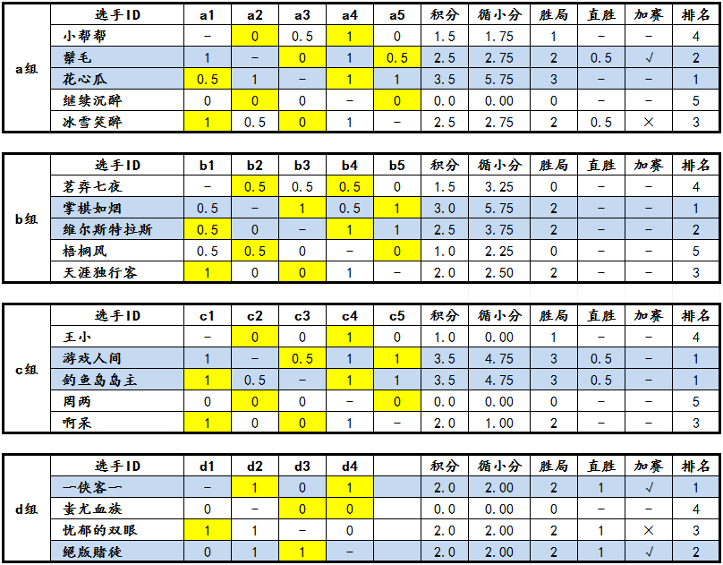
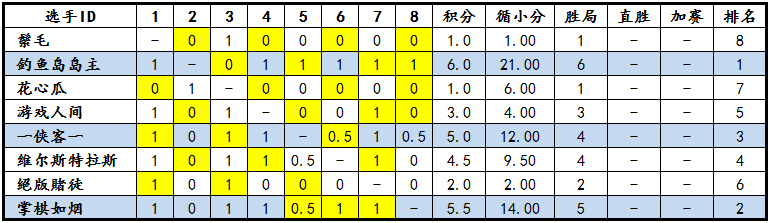
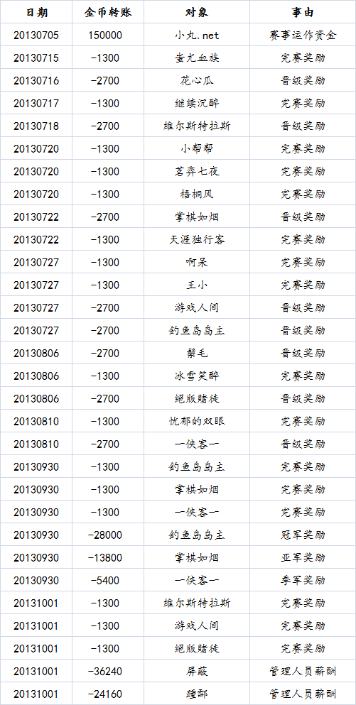

“西北狼”杯第一届博弈规则论坛战赛事总结
#1 “西北狼”杯第一届博弈规则论坛战赛事总结 作者：屏蔽 发表时间：2013-10-1 7:39:35
我作为本次比赛的裁判长写下下面这段话：
本次比赛是首次大规模规程研讨后的实践，也成为我自告奋勇做裁判长的主要原因。
从规程层面上，本次比赛从理论上以合理的逻辑形式基本解决了长期以来的冲四帮挡、替走及地毯劝降的问题，尽管采用无关手段拖延对局的可能性依然存在，但作为一个公平的竞技体系中的组成部分实际被证明是毫无问题的。通过“客观终局”原则的具体实施，裁判长和裁判员的工作具备了相当程度的有力保障，对违例的认定规则或许是一个无奈的瑕疵，希望能在今后的赛事中逐渐完善。基于这些理由，裁判组及组委会也得以在稳固的基础上进行相当细致的理论研讨并得出了很多有益的结论。
应该指出，包括退赛、弃权、完成对局、胜局、直胜等内容还不存在完善的定义，这是一个疏漏，也是首次不再引用《中国五子棋竞赛规则》而产生的“失误”，虽然看上去是一些边角上的错漏，但还是应该引起足够的重视。此外，关于“对局奖励”应当考虑更合理的解释及量化。另一方面，从实践结果来看，决赛相对于预赛的时间延长是没有意义的，甚至产生了反过来缩短时间的思路，这些都是今后需要研究的一些次要但十分典型的问题。
遗憾的是，美好的制度并不能掩盖比赛内容本身的糟粕，不如说比赛本身由于一个看起来很常见的问题反而成为了不可弥补的遗憾——就算这些恶行本身钻了规程的空子也是一样。我有理由相信，在决赛阶段，除了两位选手以近乎退赛的方式完成自己的比赛之外，其他六位选手中的大部分（如果不是全部）都参与到了一场史无前例的“串棋”行为中。这是对比赛本身的侮辱，是对竞技精神的亵渎，也是对新规则尝试希望本身的扼杀。这是爱五子棋历年进行的历届论坛战中闻所未闻的巨大丑闻，无论从质或量两方面都超出了承受范围——如果我们对这些行为竟然还没有上升到零容忍的层次的话。
有选手早就向我反映过此事，并且在出现这个端倪的第一时间，我意识到这个规程框架外的问题不可能让裁判员或裁判长代表裁判委员会武断地去解决。很遗憾，论坛战组委会对此采取了默许的态度，我只能保持克制静观发展，直到最后，我意识到有论坛的管理人员也参与到其中的时候，我才更加认识到这其中的所反映出来的深刻问题和背景。毫不夸张地说，“人”的问题是根本性的问题、是发展性的问题、是持久性的问题。对于导致这个行为产生的组织形式，参与人员，以及我自己，我想用一个很短的话语来概括我的观点：助纣为虐，为富不仁，始作俑者，其无后乎？
论坛战在形式上基本已经结束了。国庆之后，版块按照习惯会被放到底部。但我实在想多看到它摆在顶上一天。哪怕只有一点点，让我们更多、更久、更深地记录和回忆这次比赛给我们带来的点点滴滴悲欢喜乐。
====================
预赛赛果
黄色底色表示先手方，蓝色底色表示预赛录取名次暨晋级决赛名额。
====================
决赛赛果

黄色底色表示先手方，蓝色底色表示决赛录取名次。
====================
赛事资金情况公开

====================
“西北狼”杯第一届博弈规则论坛战资料下载：
 “西北狼”杯第一届博弈规则论坛战资料.rar
“西北狼”杯第一届博弈规则论坛战资料.rar［此帖子已被 屏蔽 在 2013-10-1 7:41:19 编辑过］
［ 小红眼镜同学于 2013-10-1 7:51:23 时花20金币送鲜花一朵］
［ 小红眼镜同学于 2013-10-1 7:51:23 时花20金币送鲜花一朵］
［ 小红眼镜同学于 2013-10-1 7:51:23 时花20金币送鲜花一朵］
［ 踵酃同学于 2013-10-1 10:06:03 时花20金币送鲜花一朵］
［ 踵酃同学于 2013-10-1 10:06:03 时花20金币送鲜花一朵］
［ 踵酃同学于 2013-10-1 10:06:03 时花20金币送鲜花一朵］
［ 踵酃同学于 2013-10-1 10:06:03 时花20金币送鲜花一朵］
［ 踵酃同学于 2013-10-1 10:06:03 时花20金币送鲜花一朵］
［ 踵酃同学于 2013-10-1 10:06:03 时花20金币送鲜花一朵］
［ 踵酃同学于 2013-10-1 10:06:03 时花20金币送鲜花一朵］
［ 踵酃同学于 2013-10-1 10:06:03 时花20金币送鲜花一朵］
［ 踵酃同学于 2013-10-1 10:06:03 时花20金币送鲜花一朵］
［ 踵酃同学于 2013-10-1 10:06:03 时花20金币送鲜花一朵］
［ 踵酃同学于 2013-10-1 10:06:03 时花20金币送鲜花一朵］
［ 失落刀 于 2013-10-1 11:14:39 时奖励此帖[金币加 100 威望加1］
#2 Re:“西北狼”杯第一届博弈规则论坛战赛事总结 作者：踵酃 发表时间：2013-10-1 9:15:59
毫无疑问，此次论坛战的结局是“失败”的。［ 失落刀 于 2013-10-1 11:15:26 时奖励此帖[金币加 100 威望加1］
#3 Re:“西北狼”杯第一届博弈规则论坛战赛事总结 作者：小帮帮 发表时间：2013-10-1 14:18:06
初赛还可以，决赛不少棋手，因为各种因素，烂尾的很多。#4 Re:“西北狼”杯第一届博弈规则论坛战赛事总结 作者：第五象限 发表时间：2013-10-1 22:35:10
求详细爆料#5 Re:“西北狼”杯第一届博弈规则论坛战赛事总结 作者：小红眼镜 发表时间：2013-10-2 12:30:55
串标
投标单位之间或投标单位与招标单位相互串通骗取中标就是串标 ，串标是一种投机行为，其根源是工程建设领域乃至整个社会的诚信缺失。
#6 Re:“西北狼”杯第一届博弈规则论坛战赛事总结 作者：猪小弟 发表时间：2013-10-2 12:36:25
既然是第一届博弈规则的比赛，不妨多把关注点放在规则本身上。这个规则究竟是否足够的生命力，有没有可能代替五手二打和五手N打，这个恐怕是不少棋手关心的。#7 Re:“西北狼”杯第一届博弈规则论坛战赛事总结 作者：棋空 发表时间：2013-10-3 0:35:40
也许这就是没有人喝倒彩的原因，因为她们都走上了舞台。
#8 Re:“西北狼”杯第一届博弈规则论坛战赛事总结 作者：虎哥 发表时间：2013-10-3 9:05:33
决赛阶段就是屎#9 Re:“西北狼”杯第一届博弈规则论坛战赛事总结 作者：掌棋如烟 发表时间：2013-10-3 11:00:09
就是来拿威望和金币滴~~,很遗憾超出了预料居然得到第二,本来就没有多少人捧场的比赛,又因为背后的某人实力太强和对手最后的放弃,造成了决赛阶段水的掉渣的棋局, 不过网络比赛,似乎目前也没有完全杜绝一人多号的技术手段,但却是论坛战组委会在以后不得不将面对的一个问题.上次的论坛团体赛,参与的傀儡更多,也没有人说什么,只不过这次的结果不够好看罢了. 假赛,一直伴随着五子棋的历史,若论丑闻,这个绝对还排不上号的,看过那么多,要学着淡定...#10 Re:“西北狼”杯第一届博弈规则论坛战赛事总结 作者：屏蔽 发表时间：2013-10-3 11:03:28
对那些自诩成熟或淡定而屈从的人，我只想说两个字，放屁！［ 小红眼镜同学于 2013-10-3 11:13:28 时花20金币送鲜花一朵］
［ 小红眼镜同学于 2013-10-3 11:13:28 时花20金币送鲜花一朵］
［ 小红眼镜同学于 2013-10-3 11:13:28 时花20金币送鲜花一朵］
#11 Re:“西北狼”杯第一届博弈规则论坛战赛事总结 作者：掌棋如烟 发表时间：2013-10-3 11:12:10
你放你的,但是,气愤过,失望过,有利益就扔有纠缠,不淡定还能怎么的,也没见过有什么打抱不平的义愤之举来的#12 Re:“西北狼”杯第一届博弈规则论坛战赛事总结 作者：屏蔽 发表时间：2013-10-3 11:14:54
你想见见？#13 Re:“西北狼”杯第一届博弈规则论坛战赛事总结 作者：掌棋如烟 发表时间：2013-10-3 11:18:04
我是淡定的......拿威望,走人~~~~~~#14 Re:“西北狼”杯第一届博弈规则论坛战赛事总结 作者：釣鱼岛岛主 发表时间：2013-10-3 11:18:19
说什么自诩成熟或淡定，你说别人放屁，别人还说你闲得蛋疼呢。大家为人处事的方式不同而已。你对比赛的评价完全正确，我也完全赞同。
但是我看不这么长远，说白了，我比赛就是为了金币和威望，那又怎么了呢。这些我在乎也同样不在乎，无非就是玩。愿意吐槽就吐槽，
这都无所谓，何必上升的人身攻击呢，我TM还自诩成熟或淡定，那你当我是屁好了。
#15 Re:“西北狼”杯第一届博弈规则论坛战赛事总结 作者：小红眼镜 发表时间：2013-10-3 11:19:22
 很难杜绝是一方面，有木有相对应的应对方案又是另一方面。总不能因为困难太大就干脆放任不理吧。
很难杜绝是一方面，有木有相对应的应对方案又是另一方面。总不能因为困难太大就干脆放任不理吧。
至少下次比赛可以考虑增加相应的惩罚措施嘛。另外舆论压力多少还是有一些影响力的啊。
#16 Re:“西北狼”杯第一届博弈规则论坛战赛事总结 作者：掌棋如烟 发表时间：2013-10-3 11:23:01
对了,特意在此爆个料,那个移动的网络大赛,把几十个刷分的号给作废了....排名在百位后的意外晋级,料想正在找傀儡打比赛赢奖金,有意者,自己多打听着哈,多的我就不说了#17 Re:“西北狼”杯第一届博弈规则论坛战赛事总结 作者：屏蔽 发表时间：2013-10-3 11:39:33
我人身攻击了？那你干嘛做出会被人身攻击的事情？我还以为我的评价已经非常淡定诚恳实事求是了呢。#18 Re:“西北狼”杯第一届博弈规则论坛战赛事总结 作者：釣鱼岛岛主 发表时间：2013-10-3 11:43:43
预祝比赛取得好成绩，把你的豪然正气折射到赛场每个角落。
#19 Re:“西北狼”杯第一届博弈规则论坛战赛事总结 作者：掌棋如烟 发表时间：2013-10-3 11:51:25
我也在此放个P补上 ,以表示自己曾经不淡定过.......